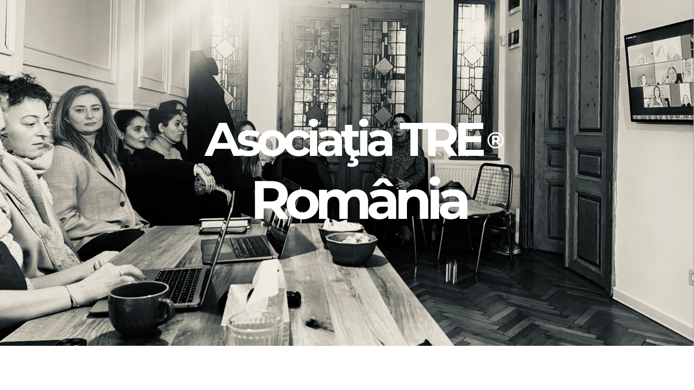
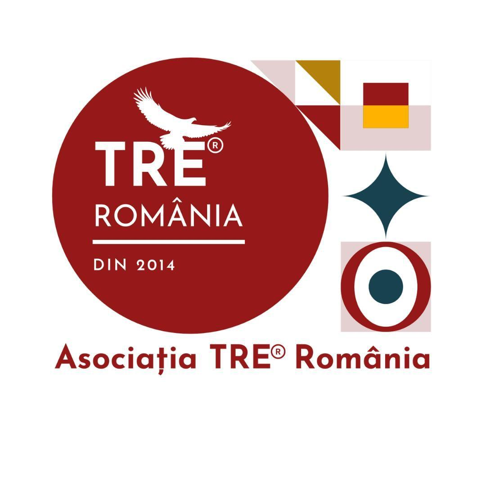
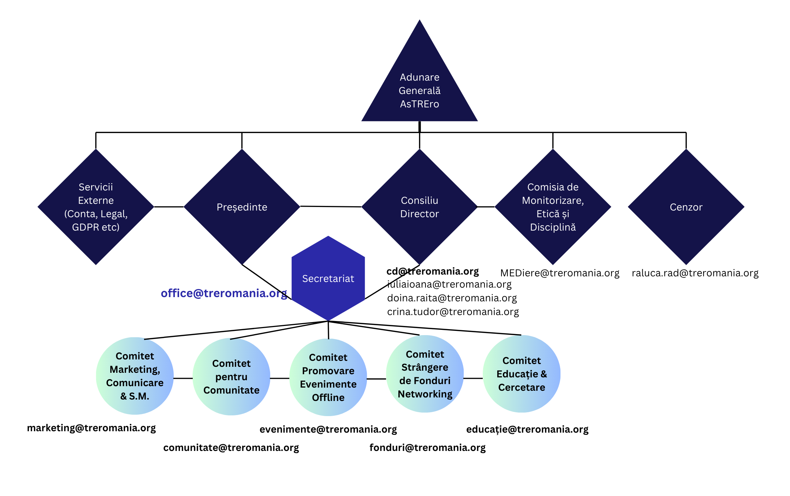
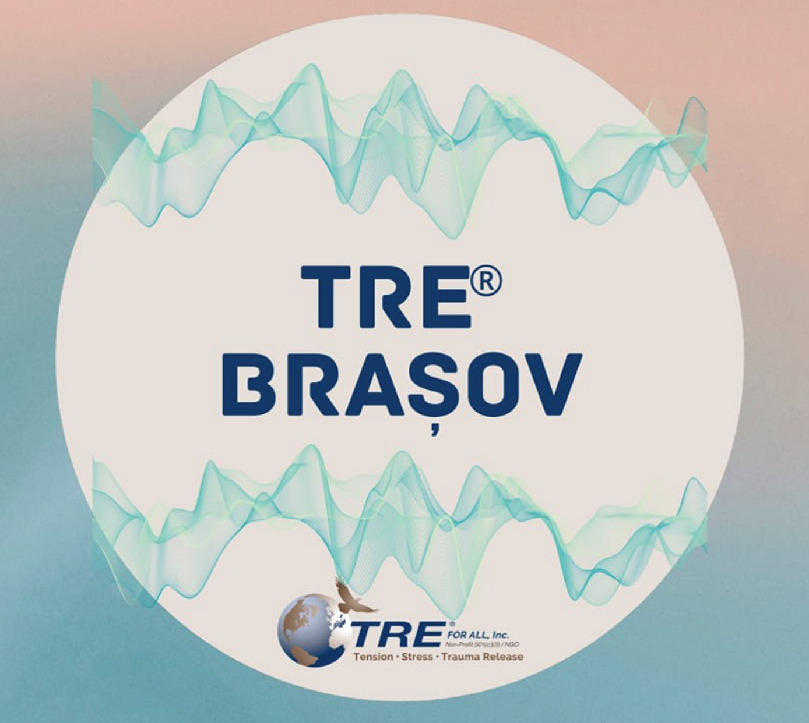
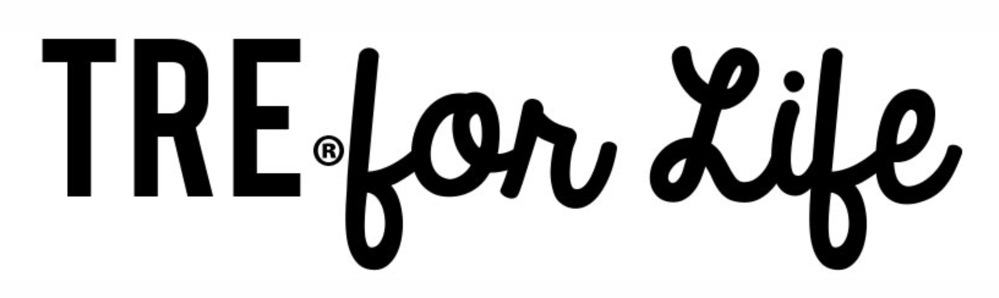
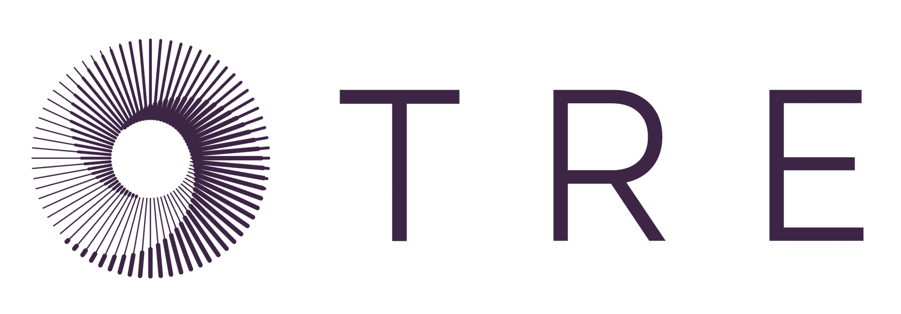

Asociația TRE® România
Înființată în anul 2017, Asociația TRE® România a fost readusă la viață în anul 2023 cu o nouă echipă, o energie diferită și o viziune + misiune care să fie în acord cu tendințele și valorile actualei generații de practicanți și facilitatori de TRE® din România.

Despre noi
Înființată în anul 2017, Asociația TRE® România a fost readusă la viață în anul 2023 cu o nouă echipă, o energie diferită și o viziune + misiune care să fie în acord cu tendințele și valorile actualei generații de practicanți și facilitatori de TRE® din România.
La curent și în acord cu tendințele de specialitate din întreaga lume. Scopul principal al asociației este diseminarea informațiilor legate de TRE® și constituirea unui corp profesional de elită, respectat pe plan național și care să activeze la cele mai înalte standarde posibile.
Asociația TRE® România își propune să sprijine oamenii din România, oferind indivizilor și comunităților abilitățile necesare pentru a se recupera și vindeca de evenimente stresante și traumatice, atât din trecut, cât și din prezent. Asociația va fi implicată în activități care promovează oferirea TRE® tuturor oamenilor din România și Moldova.
Viziune & misiune
Viziune
- Să ofere informații despre metoda TRE® în diverse regiuni din România.
- Să organizeze un grup de voluntari, dintre furnizorii certificați TRE®, care pot oferi ajutor în caz de dezastru persoanelor din zonele afectate de evenimente traumatice.
- Să distribuie informații despre TRE® publicului prin diverse canale media și să organizeze evenimente pentru a demonstra valoarea TRE®.
- Asociația va crea conexiuni cu departamentele și structurile Guvernului/ONG-urilor din România pentru a coordona ateliere de conștientizare publică.
- Să se înregistreze la departamentele guvernamentale locale ca furnizor de servicii de sănătate.
- Să devină parte a programei educaționale din România.
Misiune
- Conștientizarea publicului românesc cu privire la valoare și eficiența TRE®.
- Introducerea TRE® grupurilor cu risc ridicat, care includ, printre alții, membrii forțelor de poliție, lucrătorii de urgență, asistenții sociali, veteranii, psihologii, consilierii și voluntarii, precum și școlile și centrele de reabilitare.
- Predarea TRE® persoanelor vulnerabile și abuzate, supraviețuitorilor traumei, cum ar fi dezastre naturale, atacuri violente, violări de domiciliu și alte incidente traumatice.
- Colaborarea cu alte ONG-uri și OPN-uri care pot ajuta la identificarea persoanelor/comunităților care au cea mai mare nevoie de această îngrijire.
Asociația TRE® România își propune să fie un context sigur, responsabil și susținător pentru auto-descoperire, echilibrare, co-reglare, educare și dezvoltare, cu un aspect de suport dar doar ca punte spre autonomie și libertate personală.
Programele asociației te învață și te antrenează astfel încât să nu mai ai nevoie să te bazezi pe alte persoane - care să te repare, să te vindece, să-ți schimbe viața, să o facă mai bună pentru tine.
Este o organizație care formează și împuternicește prin procesul specific de TRE® și astfel poate ajuta o mulțime de oameni în depășirea traumelor lor, eliberării de stres și tensiuni, fără a fi vindecători sau pretinși terapeuți care spun și fac lucruri fără o bază solidă științifică.
Structura organizațională

iulia ioana h. m.
Președinte
"Cea mai sigură cale pentru a obține echilibrul, libertatea și succesul este să îți construiești singur viitorul prin alegerile și acțiunile tale din prezent."

Crina Tudor
Secretar General (interimar)
Let's do this!...

Doina Raita
Vicepreședinte
Adevarata implinire sufleteasca vine atunci cand aduci speranta acolo unde este deznadejde, iertare unde este suparare, iubire unde este ura, lumina unde este intuneric. Caci cel ce da, acela primeste, cine se uita pe sine, acela se re-gaseste.

fiona soma
Trainer Certificare
Nu te voi salva.
Pentru că nu ești neputincios.
Nu te voi repara.
Căci nu ești stricat.
Nu te voi vindeca.
Întrucât te văd în întregimea ta.
Voi merge cu tine prin întuneric,
pe măsură ce îți amintești lumina ta.

Parteneri



Interesat de TRE®?
Dacă ești deja familiar cu această metodă, practicant în formare sau facilitator certificat și dorești să participi activ la dezvoltarea TRE® în România, alătură-te comunității noastre și devino membru!